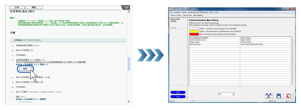
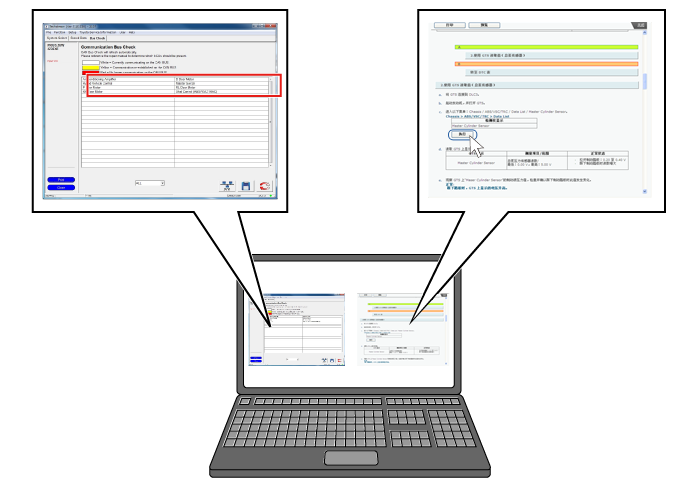
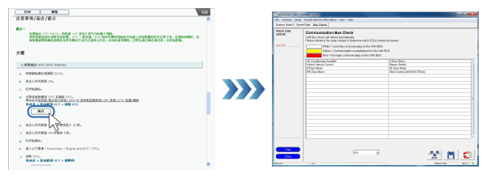
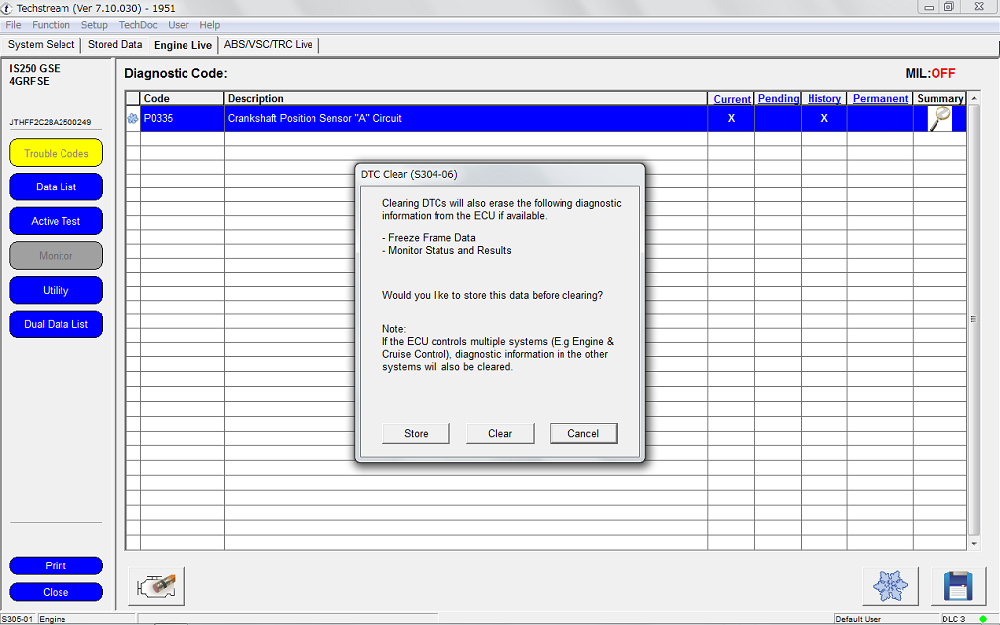

点击执行按钮。GTS 画面将启动并显示。

如果车辆已连接 GTS，则可以连通 GTS。
点击诊断程序等显示的执行按钮，将自动启动 GTS 并显示健康检查画面。此连通功能也可用于主动测试、CAN 总线检查等。

点击执行按钮。GTS 画面将启动并显示。  |
| 读取诊断代码 |
自动读取诊断代码并显示结果。 |
清除诊断代码 |
显示清除诊断代码的确认画面。  |
数据监视 |
显示与维修手册程序相关的数据监视。（相关项目显示在列表顶部。） |
主动测试 |
自动选择与维修手册程序相关的主动测试项目并显示执行。 |
工作辅助 |
自动选择与维修手册程序相关的工作辅助项目并显示第一个工作步骤。 |
定制参数 |
显示定制参数项目。 |
CAN 总线检查 |
自动执行 CAN 总线检查并显示结果。 |